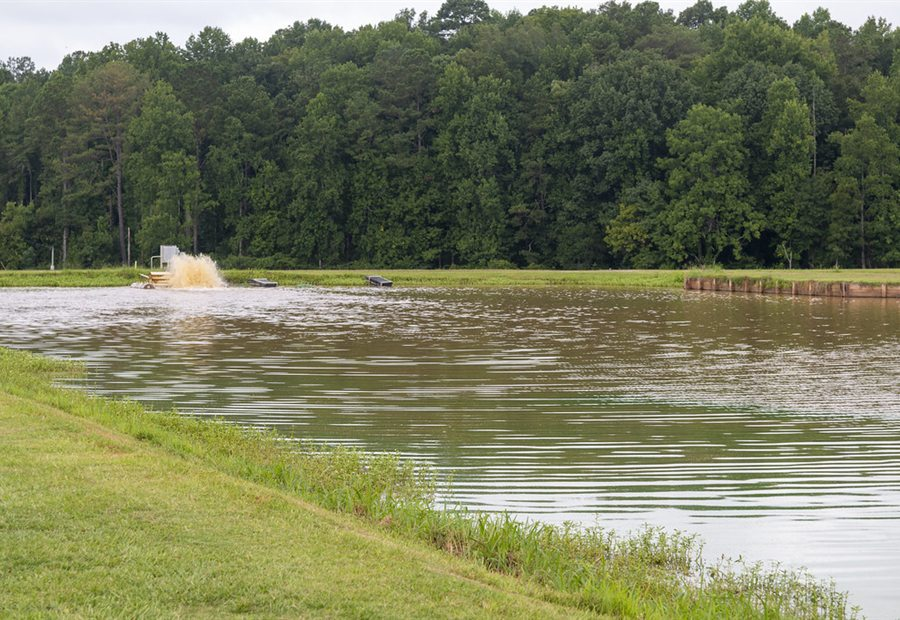
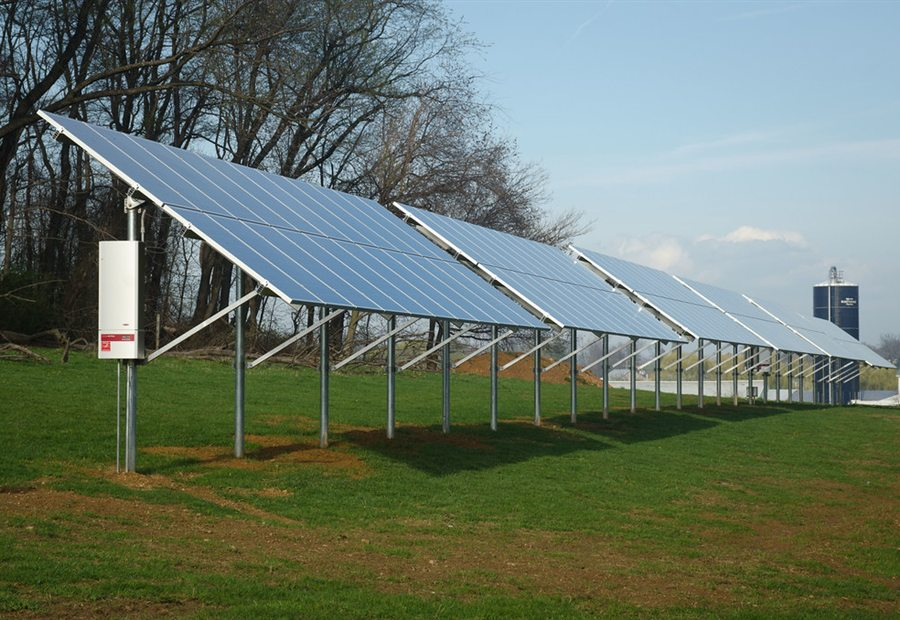
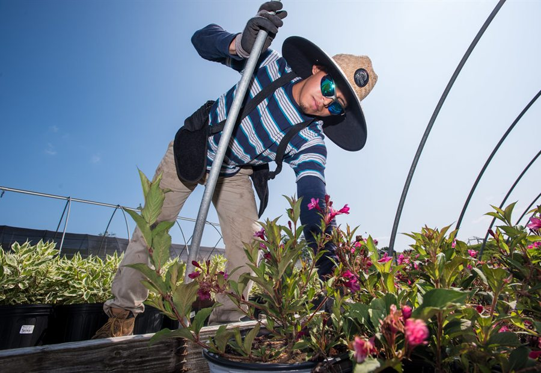

Land intake
Owner shares district, village, plot size, water access, road access, and current land condition.
PlotCare is a land intelligence and activation platform for idle plots. It helps owners understand land potential, compare use cases, match verified local partners, and track income once a plot is activated.
The product is designed around a trust-first workflow. Suitability comes before activation, and activation comes before revenue claims.
Owner shares district, village, plot size, water access, road access, and current land condition.
The app creates a suitability view for mushroom sheds, aquaculture, solar leasing, nurseries, crops, and partner-led farming.
Farmers and operators are matched through identity checks, local references, experience, and use-case fit.
Owners get a dashboard for activity updates, expected payouts, completed transfers, and partner performance.
The repo already contains demo surfaces for land locator, report preview, verified partner flow, and revenue dashboard concepts.
The app avoids generic farming claims. Each opportunity is framed with operating conditions such as minimum land, temperature, water, shade, road access, and partner availability.

Best when water retention, inlet quality, and operator skill are confirmed.

Needs flat, open land with low shade, road access, and grid proximity.

Depends on daily water, shade-net planning, nearby demand, and trained caretakers.
This repository contains the working Next.js app and a GitHub Pages static export workflow. The public URL is currently showing this project preview because Pages is still publishing from the branch root.
Use npm run dev from the project folder, then open localhost:3000 while the terminal is running.
The workflow builds the Next.js app into an out folder with the correct /plotcare-app base path.
In GitHub Settings, set Pages source to GitHub Actions so the full app replaces this preview.
This preview explains what PlotCare does while the full app is connected to the GitHub Actions deployment path.